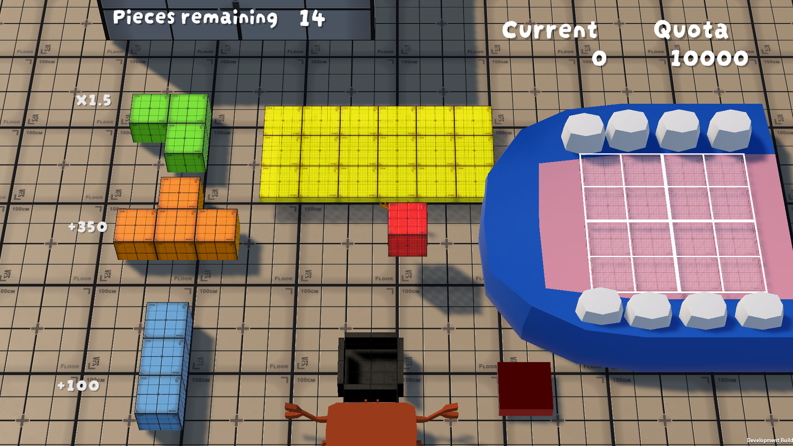
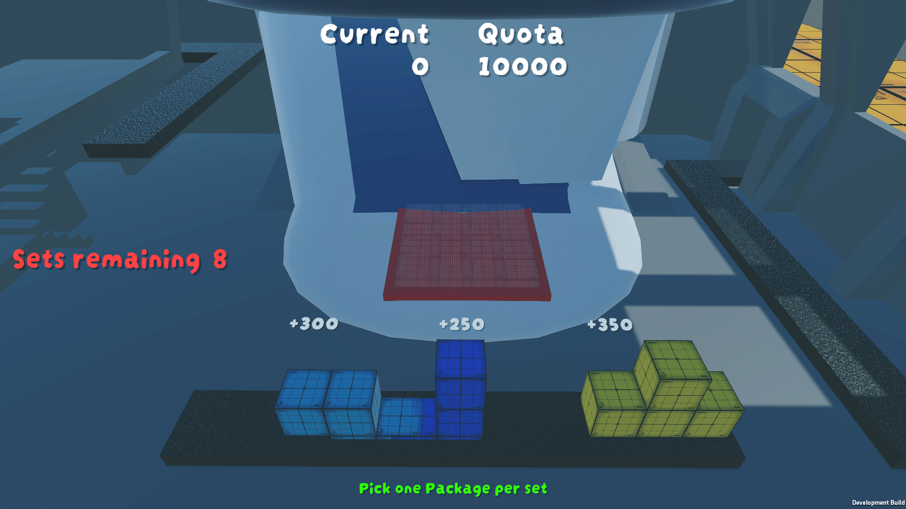
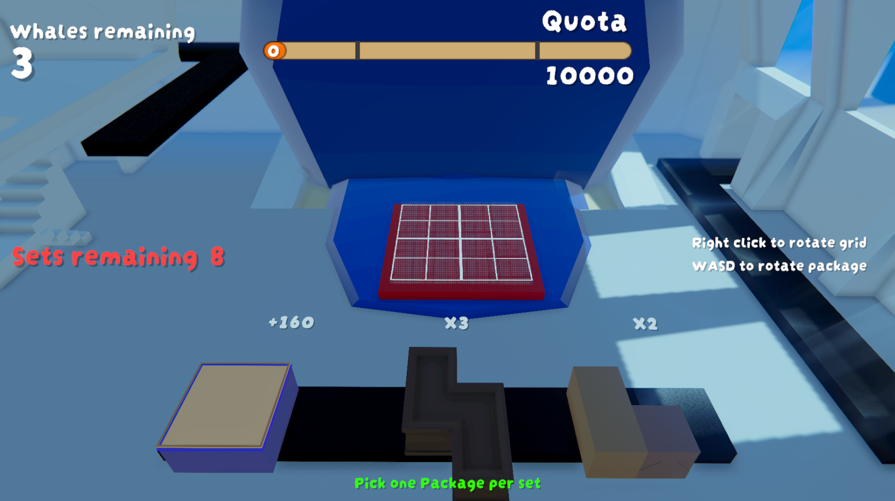

During concept selection, I advocated for the simplest of our four ideas: a 3D package-stacking puzzle about a tiny loader filling whales. The reasoning was production-focused. A smaller core system would give the team more time for responsiveness, audiovisual feedback, presentation and iteration before VFS Pitch & Play.
The project goal from the beginning was not “make the biggest game.” It was “make a small game feel exceptionally finished.”
Pre-productionMonths 1–2 · concept, pillars, systems, prototypes
M1Core placement and interaction
M2 / M3Scoring, readability and iteration
AlphaPolish, onboarding and accessibility
Beta / PnPShowcase-ready build


